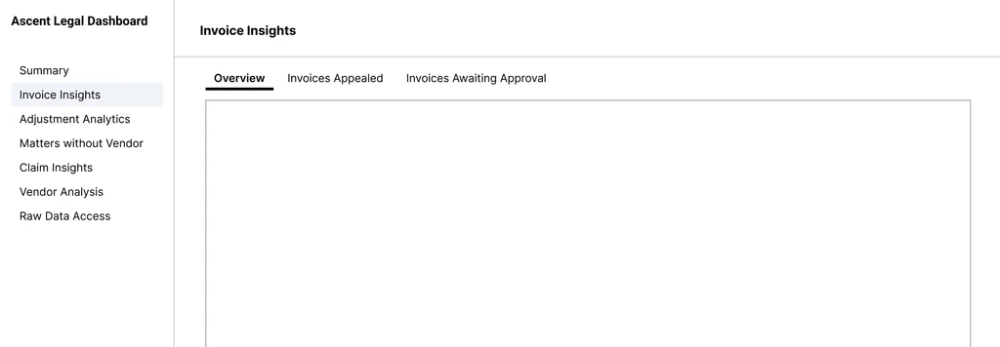
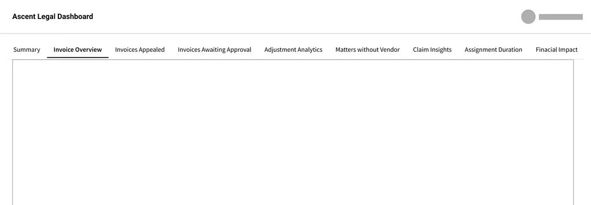
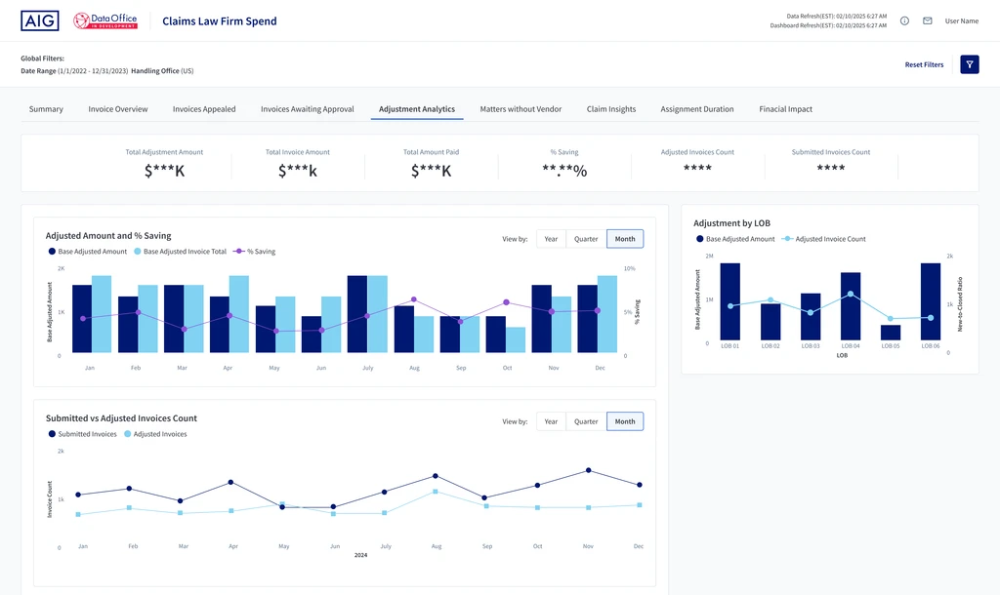
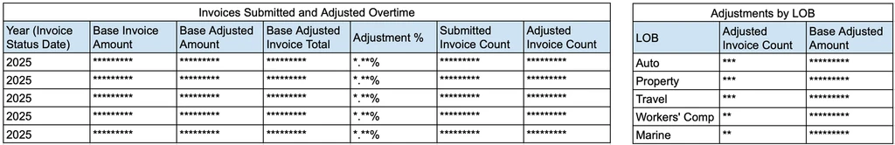
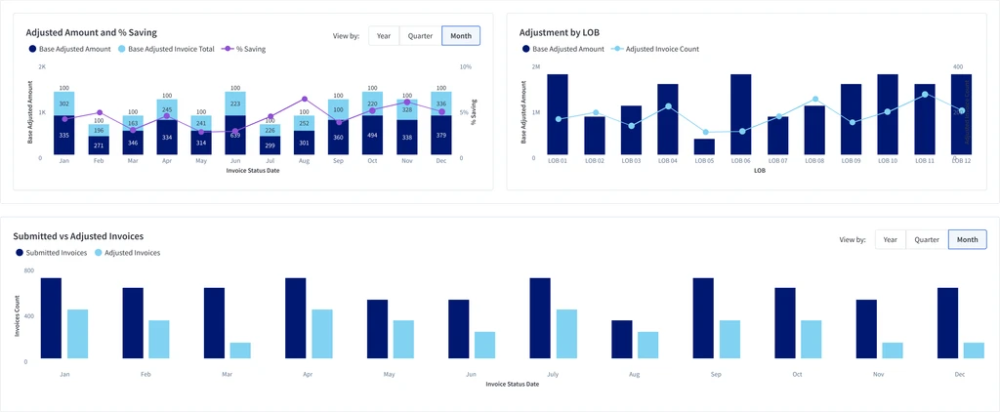
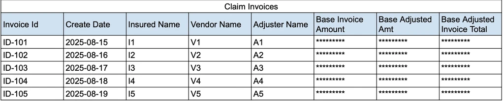
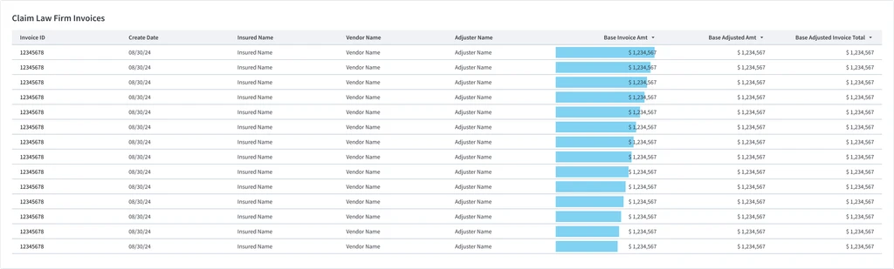
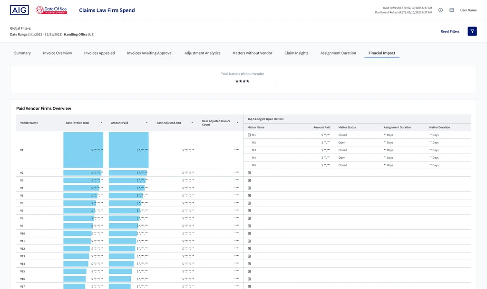

Overview
A global insurer's legal operations team oversaw millions in law firm invoices through dozens of spreadsheets. Supervisors had the data, but not the story: where work was piling up, where savings came from, and which firms were driving cost.
Working as an agency designer alongside the client's data team and our own Power BI architect, I turned those spreadsheets into one dashboard organized around how supervisors oversee the work.
The challenge
Supervisors were accountable for millions in legal spend, but had no single place to see it.
The legal operations team oversees matters handled by outside law firms: assigning a vendor, reviewing invoices, adjusting or rejecting charges, and paying. Each step produced its own spreadsheet. Each one answered a single question well, but together they couldn't answer the questions supervisors asked every day: Is work piling up? Are we saving money? Which firms need attention?
Fragmented
The same metrics lived in several places and formats. New vs. closed matters alone appeared as three different charts.
No oversight layer
About a dozen tables carried equal weight, so delayed approvals, unassigned matters, and high-cost firms were easy to miss.
Manual reporting
Monthly executive updates meant rebuilding charts in Excel and pasting screenshots into slides.
Before: the spreadsheets and charts supervisors worked from
The result was slow approvals, missed discounts, and little visibility into how law firms and approvers were performing.
Who I designed for
Legal operations supervisors, who oversee the team's matters, invoices, and law firm relationships.
What they needed to do
- Monitor cost and savings daily
- Track law firm and approver performance
- Prepare monthly executive reports
Understanding the work
I started with dozens of spreadsheets and charts, but little context on how they were used. Access to supervisors was limited, so I worked in close loops with the client's analysts and PMs to learn the legal operations workflow, then mapped every spreadsheet to the step it supported.
Legal operations workflow, with the data group each step produced
The mapping gave the data four logical groups: Matters and Invoices, Adjustments, Vendors, and Claims. It also showed what the workflow couldn't explain. One step produced no data at all, and claims didn't fit anywhere. A dashboard that mirrored this process would be accurate, but it wouldn't tell supervisors where to look.
The turning point
The workflow told me how the data was produced. It didn't tell me how it would be used. Supervisors don't oversee a process step by step. They oversee workload, cost, and risk.
What I thought
A process to mirror
- Follow the workflow steps
- Group views by data source
- Give every report equal space
What I learned
A story to tell
- Lead with workload
- Then cost and savings
- Then vendor relationships
- Keep risk visible as context
A narrative hierarchy for oversight
I reordered the groups around the questions supervisors ask first. Vendor assignment happens early in the process, but supervisors care about it only after they understand cost. That change in order turned a process map into a narrative.
The same spreadsheets, reordered around supervisors' questions
1Workload
How much is in the pipeline?
- New vs. closed matters over time
- New vs. closed matters, year over year
- Closed matters vs. amount paid
- Open matters with no vendor assigned
2Cost and savings
What are we spending, and what are adjustments saving?
- Invoices submitted and adjusted over time
- Invoices awaiting approval over 30 days
- Invoices awaiting approval by approver
- Appealed invoices by vendor
- Adjustments by line of business
- Invoices paid and rejected
3Vendor relationships
Which firms drive cost, delays, or savings?
Moved from step 2- Vendor ranking by average assignment duration
- Longest assigned open matters per vendor
- Highest paid vendor firms
- Highest paid matters per vendor
4Risk context
Where is the company exposed?
Outside the workflow- Claim invoices
- Highest paid claims
How might we turn dozens of disconnected reports into one dashboard that tells supervisors where to look first?
This reframing led to three design decisions.
Decision 1
Structure navigation around oversight, not data
Every critical view is one click away, in the order supervisors think.
My first structure followed the data
I grouped related views under five parent tabs, with sub-tabs inside. It was clean and logical, but it assumed supervisors would navigate the way the data was organized, and it put 6 of the 9 views one click out of sight.
Early concept: nested tabs, organized by data category
6 of 9 views sat one level down, behind a parent tab

Early wireframe: sidebar sections with sub-tabs
What supervisors told us
When I presented the nested structure, supervisors liked the grouping but pushed back on three things:
- Hidden insights. Key charts were buried in sub-tabs. They wanted every critical view one click away.
- Oversight over process. They don't navigate by data category. They want workload and cost up front, so they can spot issues right away.
- Priority order. Risk, like claims and matters without a vendor, mattered more than vendor management, so it had to come first.
The feedback showed a gap between how the data was organized and how supervisors oversee the work.
Flat tabs, with the grouping kept
I flattened the navigation into nine top-level tabs and sequenced them to match supervisors' priorities. Related views still sit next to each other, so the logic of the first structure wasn't lost, only the hierarchy.
Final structure: nine flat tabs, grouped and ordered by oversight priority

Final wireframe: one row of tabs, full-width content
| Feedback | What changed |
|---|---|
| Hidden insights | All nine views are one click away. Before, six sat inside sub-tabs. |
| Oversight over process | Summary comes first as the daily scan view, followed by invoices and savings. |
| Priority order | A new Risk group, Matters without Vendor and Claim Insights, sits before the vendor views. |
| More room for data | Moving navigation from a sidebar to the top gave twelve-month charts and the vendor table the full width. |
Decision 2
Make every number scannable
Supervisors scan for problems. The data had to show them without being read cell by cell.
A status check at the top of every tab
Each tab opens with KPI cards for the numbers supervisors check first, so a one-second glance answers "is anything off?" before they look at a single chart.

1KPI cards
Headline numbers for the tab, in the order supervisors read them: cost, then savings, then volume.
2Charts matched to the question
Trends over time, comparisons across lines of business, and two counts side by side each get the chart that answers them fastest.
Turning tables into charts
Each spreadsheet answered a question, but supervisors had to read every cell to find the answer. I turned the most-used tables into charts shaped around the question:
- Trends over time became monthly bars, with % saving as a line on a second axis and a Year, Quarter, Month toggle.
- Comparisons across lines of business became bars by line of business.
- One dense table was split in two: one chart for amounts and savings, one for invoice counts.
Before

After

Adding visual hints to tables
Some data needed to stay in a table, because supervisors still look up individual invoices. Instead of replacing these tables, I added inline bars to the column they scan first, Base Invoice Amount, and sorted it from highest to lowest by default. I also lightened the grid and right-aligned the numbers, so large tables are easy to scan and high-cost invoices stand out right away.
Before

After

Decision 3
Make every screenshot presentation-ready
Context travels with the chart.
Supervisors built their monthly executive updates by taking screenshots of the dashboard. A screenshot without its filters is easy to misread: a chart for one office can pass for the whole company. So I kept the active filters and the data refresh time visible at the top of every view. Any screenshot now carries its own context.
Context on screen, at the top of every tab
1Active filters
Always shown as plain text, so the date range and office are part of every screenshot.
2Refresh time
Tells readers how current the numbers are.
It fit how supervisors already worked. Instead of asking them to learn a new export flow, the design made the habit they already had reliable.
The result
As an agency engagement, my part ended when I handed the designs to our Power BI architect to build, so I don't have post-launch metrics. What I can show is the dashboard we delivered and what it changes about a supervisor's day.
Executive overview at a glance
New vs. closed matters, amount paid, and the vendors carrying the most open work, all on one screen.
Where savings actually happen
Adjusted amounts and % saving over time, broken down by line of business to show where review effort pays off.

Vendor spend with drill-down
Inline bars make high-cost firms easy to spot, and each row expands to show that vendor's five longest open matters.
What changes for supervisors
| Task | Before | After |
|---|---|---|
| Find a metric | Search across dozens of spreadsheets | One dashboard, nine views, one click each |
| Spot a problem | Read tables cell by cell | KPI cards, charts, and inline bars point to it |
| Report monthly | Rebuild charts in Excel and paste screenshots | Screenshot any view, with its filters included |
Designing within Power BI
The dashboard had to be built in Power BI, so every design decision had to be something the tool could deliver. I worked closely with our Power BI architect throughout the project and checked each view with them for feasibility before it was finalized.
What I handed off
I delivered high-fidelity mockups for all nine views. Our Power BI architect received the files to build the dashboard, and the client signed off on the final design.
Reflection
I was given spreadsheets to visualize. The bigger opportunity was giving supervisors a story they could act on.
Three lessons stayed with me:
- Organize around the decision, not the data. My first structure was logical, but it was logical for the data. The supervisors' order of priorities, not the data model, decided where each view belonged.
- Validate through whoever you can reach. With limited access to supervisors, I relied on close loops with the client's analysts and PMs, then used the one supervisor review to reshape the navigation.
- Small fixes can carry lasting value. Keeping context on screen took little effort, but it made every screenshot trustworthy. Quick solutions are worth it when they scale to every view.